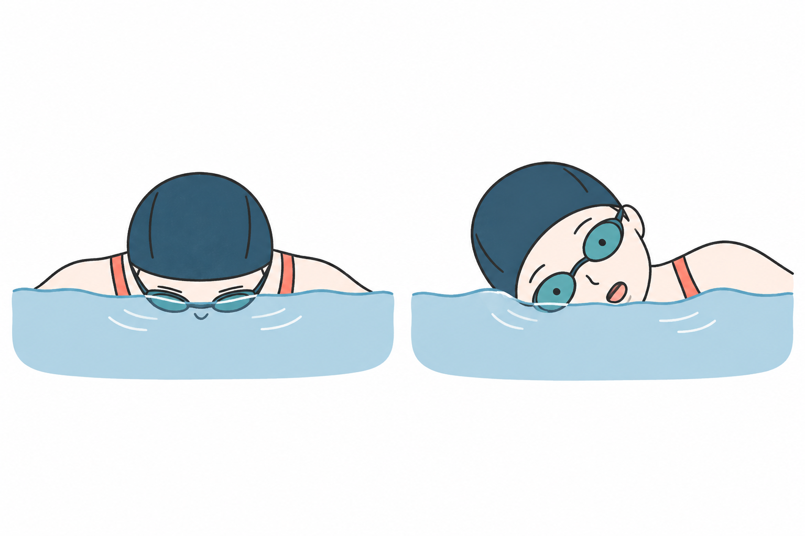
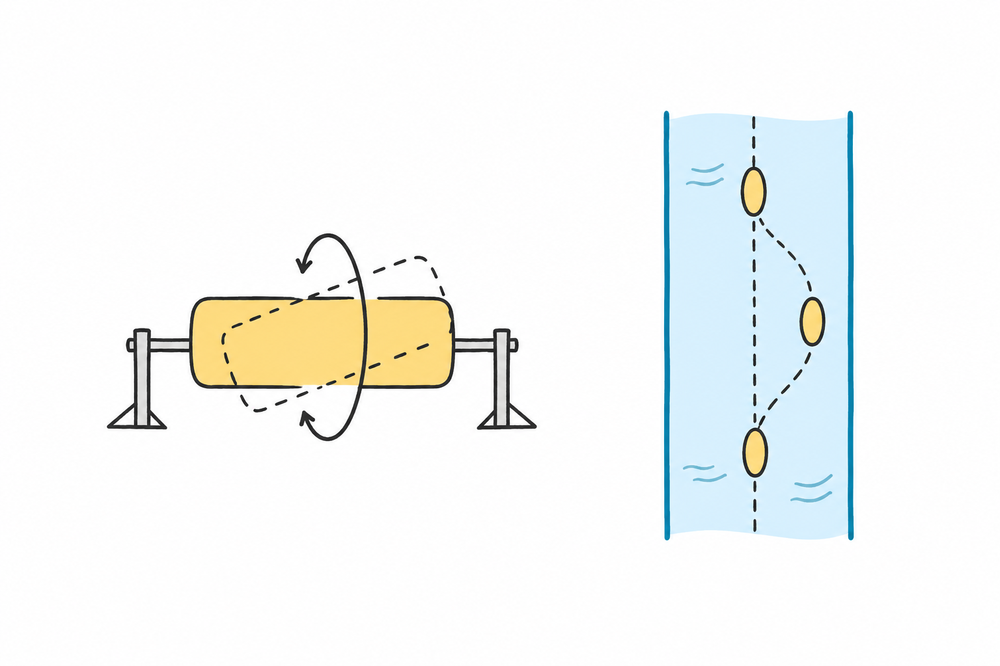
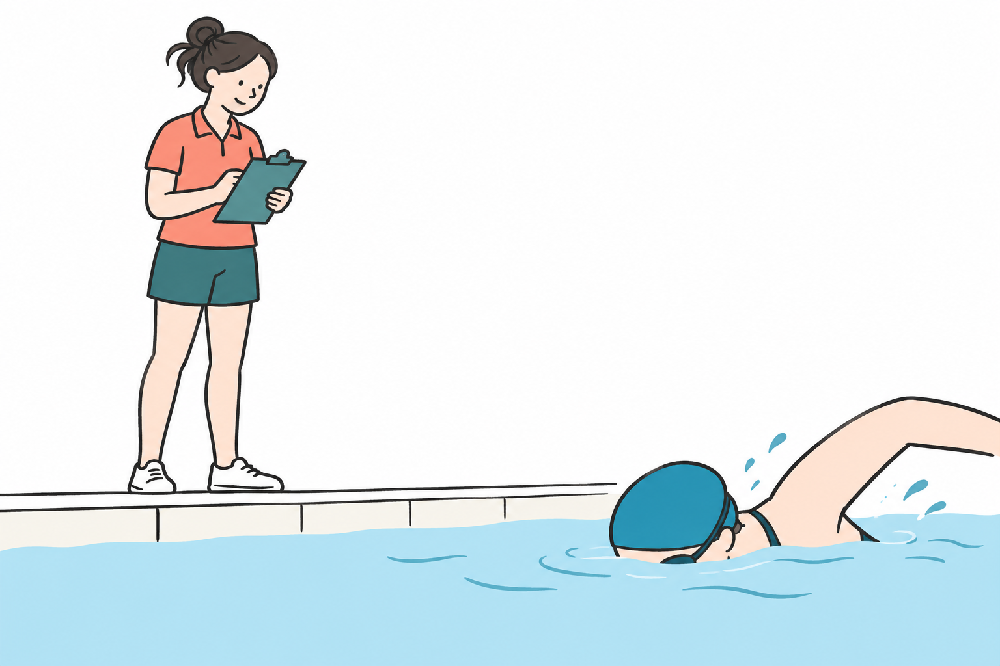
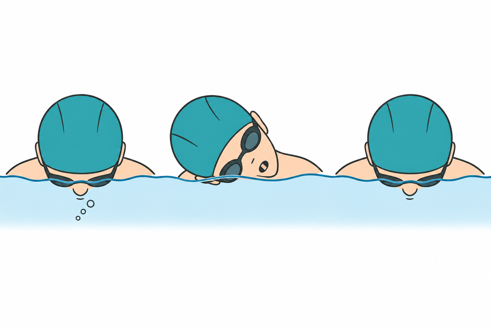
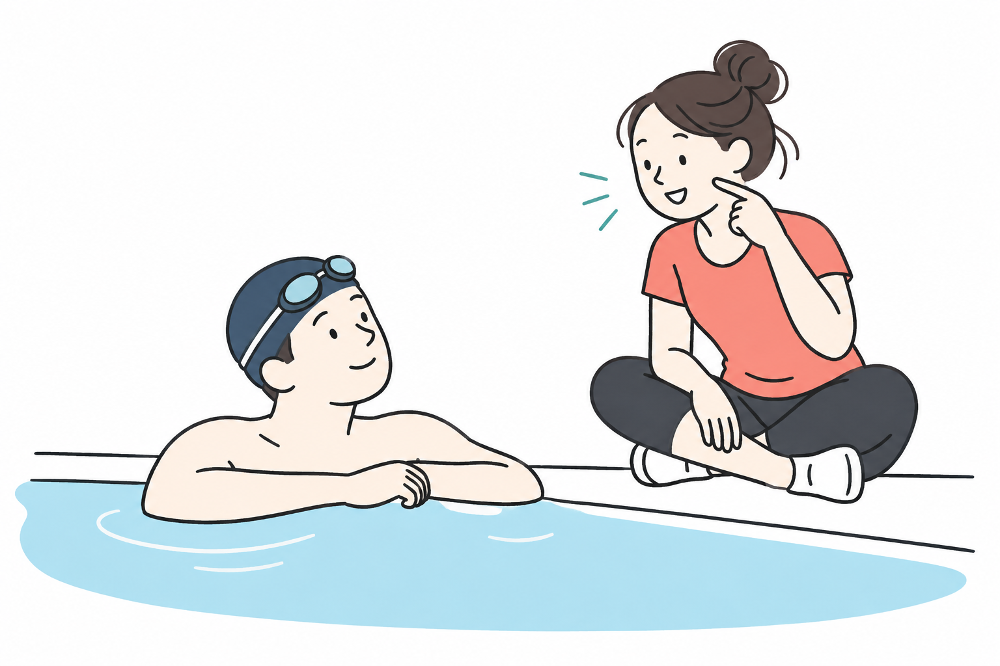

SWIMMING RESEARCH / 09
クロールの息継ぎ、顔を上げずにどう吸う？
2026年10月22日 · クロールの息継ぎ

顔を横へ向けたのに、口に水が入る。吸おうとすると前を見上げ、脚が下がってしまう。「頭を上げない」と言われても、それでは息が吸えない――そんな戸惑いはありませんか。
手掛かりは、頭を高く持ち上げるより、身体の向きの変化に合わせて口を空気へ出すこと。頭の高さだけでなく、水面と口がどこにあるかを見ると、試すことが具体的になります。
大切なのは、十分に吸って泳ぎへ戻れること。研究が示す身体の変化と、指導者の解説を手掛かりに、次の練習で確かめる一点を探しましょう。
1 「上げない」は、顔を水中に固定することではない
「頭を上げない」を「顔をずっと下へ向けたままにする」と受け取ると、吸う場所がなくなります。下向きの顔を横へ向けることと、頭全体を水面から高く抜くことは、別の動きです。
図の左は顔が水中にある場面、右は横を向いて口を出す場面です。頭を水面から丸ごと抜かなくても、顔の向きが変われば、口と水面の関係が変わります。
頭の高さと、顔の向きを分けて見る

左は顔を下へ向け、口が水中にある場面。
身体の向きの変化に合わせ、口を空気のあるところへ出す。
水泳では身体も動いているので、首だけの向き直りで済ませようとせず、肩や胴体が横へ向く動きと合わせて考えます。米国の水泳団体U.S. Masters Swimming（USMS）の指導記事も、頭を持ち上げたり横へ引いたりするより、回転して息を吸うことを説明しています。USMS・呼吸ガイド
見たいのは、頭が水から全部出たかどうかではなく、吸う瞬間に口が水から出ているかです。「低く」を守るために口まで沈めるのでは、目的が逆になります。
見守る人も、まず口が出る場面を見ます。顔の動きが小さく見えても、本人が吸えていなければ、まだ調整が必要です。「頭を低くできた」で終わらず、「そこで吸えた」まで確かめます。
2 身体を回すことと、横へ曲がることは違う
もう一つ混同しやすいのが、「横を向く」と「横へずれる」です。
身体を、頭から足へ一本の線が通っているものとして考えます。その線の周りに向きが変わるのが、ここでいう回転です。専門的にはロールと呼びます。一方、頭がレーンの横へ離れ、胴体が弓のように曲がるのは、別の変化です。
回ることと、横へずれることは違う

左の模型は、棒の位置を変えずに回す例。身体の角度を指定する模型ではありません。
右はレーンを真上から見た図。回転とは分けて、泳ぐ道筋を見る。
たとえば、細長い模型の真ん中を棒が通っていると想像してください。棒の位置を変えずに模型を回すと、向きが変わります。一方、棒ごと横へ動かすと、場所が変わります。この模型は「向き」と「場所」を分けるための例です。
図の左の模型では、軸の周りに向きが変わる様子を見ます。右のレーンを上から見る図では、進む道筋が横へ曲がる様子を見ます。泳者を見るときも、身体の向きと進路は分けて確認します。
身体にはしなやかさがあるので、肩と腰を同じ角度に固定する必要はありません。泳ぐ動きの中で、口を出せる向きへ変わっていくことを考えます。
この区別がつくと、息継ぎで曲がってしまったときに、すぐ「もっと大きく回ろう」と考えずに済みます。回る量の問題なのか、頭を横へ運んでいるのか。まず、どちらの動きが起きているかを見ます。
3 研究でも、息継ぎのときの動きは変わっていた
息継ぎの有無で、選手の身体の動きは変わるのでしょうか。
PsycharakisとMcCabeの研究では、国内・国際大会に出場する男子泳者12人が、25mを全力で泳ぎました。得意な側で呼吸する条件と、呼吸しない条件を比べ、水上と水中のカメラから肩と腰の回転を調べています。2011年の原著抄録
研究で比べた条件を確かめる

男子選手12人が25mを全力で泳ぎ、得意な側で呼吸。
同じ研究で呼吸をしない試行と比べ、肩と腰の回転を観測。
呼吸する条件では、呼吸側へ回る肩と腰の動きが大きくなり、泳ぐ速さは低下しました。ただし、回転について何を比べるかによって結果は異なりました。「息継ぎをしたら、すべての回転が一律に大きくなる」という単純な結果ではありません。
この結果から受け取れるのは、呼吸は首だけで完結せず、肩や腰の動きとも関わるということです。顔だけを見て直そうとするより、吸う瞬間に身体がどう動いたかも見る。その視点を研究は与えてくれます。
一方、対象は選手の短い全力泳です。初心者に適した回転角度や、長く楽に泳ぐための呼吸回数を決めた研究ではありません。呼吸しない設定は実験の比較用で、練習としてまねするものではありません。
そこで普段の練習では、必要な呼吸を確保したうえで、頭と身体の動きを見ます。研究から形の正解を一つ選ぶより、自分が吸う場面を細かく理解するために使ってみましょう。
4 横を向いてから、吐くことまで始めていない？
顔の向きが変えられても、吸う時間が足りないと感じることがあります。そこで、吐く・吸うをどこで行っているかも確認します。
USMSの初歩ガイドは、顔が水中にあるときに吐き、口が水から出たときに吸う流れを示しています。呼吸回数も、息が足りなくなる型に無理に合わせるのではなく、自分に合うものを探すという立場です。USMS・泳ぎの基本
吐く・吸う・戻すの場所を見る

- 1水中で吐く
顔が水中にある間に、無理なく吐く。
- 2口が出て吸う
口が水から出ている場面で吸う。
- 3泳ぎへ戻る
十分に吸えたことを確かめ、顔を戻す。
口を出してから「まず吐く、次に吸う」を始めると、水面の上で二つの仕事をしなければなりません。水中で吐く準備ができていれば、口が出た場面では吸うことへ移れます。ここでいう準備は、肺を空にするまで無理に吐き切ることではありません。
確認する順番は、「低くできたか」よりも「吸えたか」が先です。次に、吸うために頭を大きく前へ持ち上げていないか、横を向いたまま長く残っていないかを見ます。急いで顔を戻すことだけを命令すると、吸い終える前に水へ戻してしまうかもしれません。
水を飲みそうになったら、さらに速く腕を回して解決しようとせず、一度止まって整えましょう。口が水から出る位置、吐くタイミング、顔を戻すタイミングのうち、どこが難しいのかを分けます。
保護者や指導者が声をかける場合も、「もっと回って」だけではなく、「口が出たとき、吸えた？」と尋ねると、本人の困り事を確かめやすくなります。外から見える形と、本人が吸えた感覚の両方を扱います。
5 次の練習では「吸えた一回」を確かめる
ここからは本記事の観察案です。短い距離を安全に泳げる人は、監視のあるプールで、無理なく終えられる区間を選びます。まだ呼吸が怖い人や子どもは、指導者と一緒に、立って休める環境で行いましょう。
最初は普段どおりに泳ぎ、息継ぎの一回に注目してください。「口が出た」「吸えた」「顔を戻せた」のうち、どこで慌てたかを、止まってから思い出します。
一回の息継ぎで、どこを確かめる？

共通の条件
水面と口の位置を確かめる。
外から見える形だけでなく、本人の感覚を聞く。
壁で休み、慌てた場面を一つずつ振り返る。
休んだあとの試行では、呼吸の回数や泳ぐ速さをまとめて変えず、頭を前へ持ち上げる代わりに、身体の向きの変化に合わせて横を向くことだけに注意を向けます。首を強くねじる必要はありません。息が必要になったら普段どおり吸い、苦しさを我慢しません。
結果に応じて、次の一手を変えます。
- 吸えたが進路が横へずれた：頭を横へ運んでいないか、指導者に見てもらう。
- 口を出したのに吸う余裕がなかった：水中で吐くところから、楽な条件で確認する。
- 低くしようとして水が入った：低さの追求をいったんやめ、口を空気へ出せる姿勢を確認する。
- いつもより落ち着いて吸えた：すぐに距離や速さを増やさず、別の機会にも確かめる。
首の痛みや強い息苦しさがあれば中止します。一度の試行で完成を目指さず、困っている場面を一つ見つければ十分です。
最初の疑問だった「上げないと吸えない」は、「どちらへ向けば、口が出て吸えるか」へ置き換えられます。次の練習では、息継ぎの一回だけを確かめてみてください。口を出し、十分に吸い、泳ぎへ戻る。そのつながりを、自分の感覚と図の両方で確かめていきましょう。
参考資料と確認範囲
- Psycharakis SG, McCabe C. (2011). Shoulder and hip roll differences between breathing and non-breathing conditions in front crawl swimming. Journal of Biomechanics, 44(9), 1752–1756. DOI: 10.1016/j.jbiomech.2011.04.004. PubMed（抄録を確認。全文の表・個別角度は未確認）
- Andrew Sheaff. Freestyle Breathing: The Complete Guide. U.S. Masters Swimming（指導記事本文を確認。埋め込み動画の映像・音声は未確認）
- Ann Lowry. How to Breathe Properly While Swimming, Swimming 101: The Stroke Basics内. U.S. Masters Swimming（呼吸解説本文を確認）